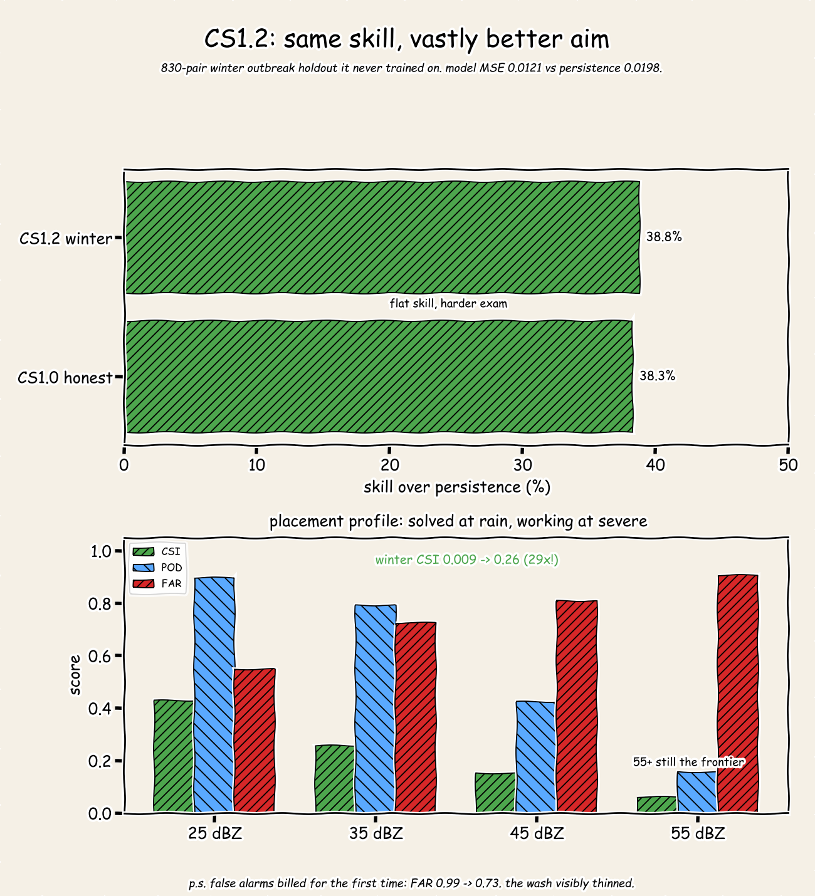
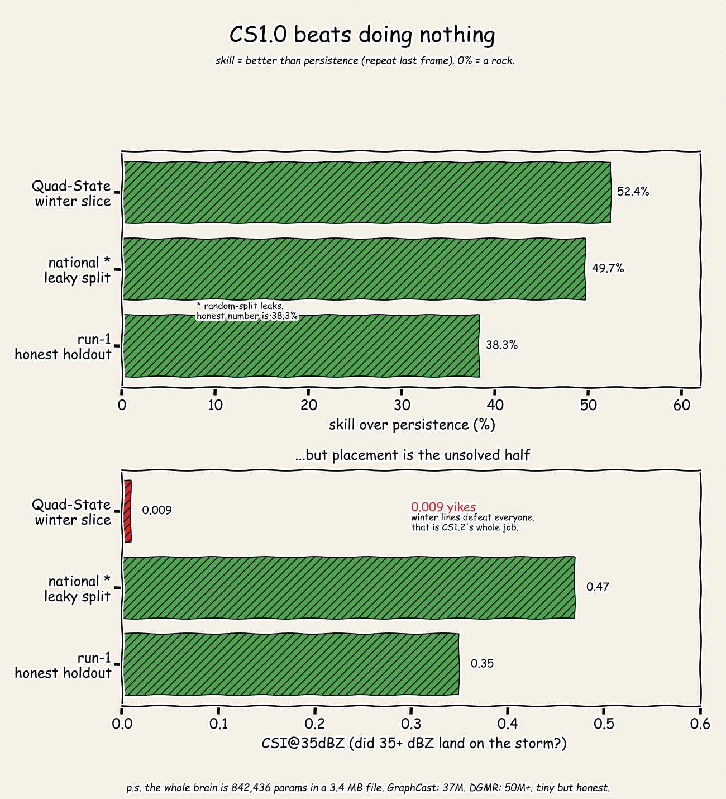
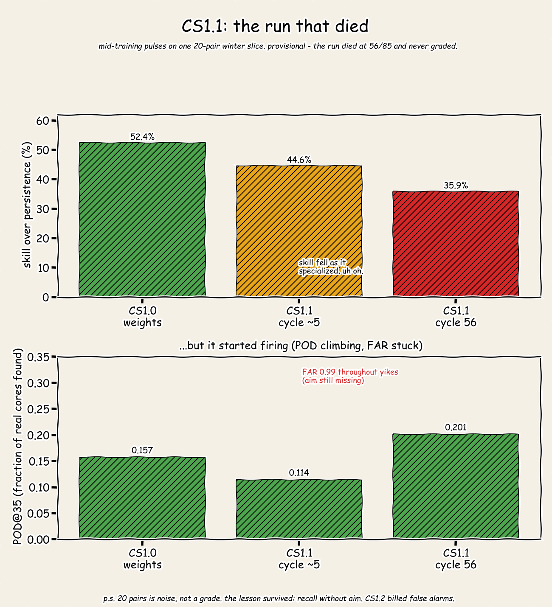

AI Model
CS: a small model learning to place storms
842,436 parameters in a 3.4 MB file. For reference, GraphCast is 37M and DGMR is 50M+. The numbers below are dev benchmarks, including the runs that failed. Skill means better than persistence, which is repeating the last frame. Zero percent is a rock.
Training now
01 CS1.2: same skill, better aim
830-pair winter outbreak holdout it never trained on. Model MSE 0.0121 against persistence 0.0198. The headline: winter CSI went from 0.009 to 0.26, and false alarms dropped from 0.99 to 0.73 for the first time.
| Run | Skill over persistence |
|---|
| CS1.2 winter holdout | 38.8% |
| CS1.0 honest holdout | 38.3% |
| Threshold | CSI | POD | FAR |
|---|
| 25 dBZ | 0.43 | 0.90 | 0.55 |
| 35 dBZ | 0.26 | 0.79 | 0.72 |
| 45 dBZ | 0.15 | 0.42 | 0.81 |
| 55 dBZ | 0.06 | 0.16 | 0.90 |
Rain placement is solved. Severe placement is the work in progress. 55+ dBZ is still the frontier.

Graded
02 CS1.0: beats doing nothing
Honest holdout number is 38.3%. The higher splits are reported with their caveats, not hidden: the national random split leaks, and the quad-state slice is one storm type.
| Split | Skill over persistence | CSI at 35 dBZ |
|---|
| Quad-state winter slice | 52.4% | 0.009 |
| National random split (leaks) | 49.7% | 0.47 |
| Run-1 honest holdout | 38.3% | 0.35 |
Winter lines defeat everyone, including this model at 0.009. That gap is what CS1.2 exists to close.

Dead run
03 CS1.1: the run that died
Mid-training pulses on one 20-pair winter slice. The run died at cycle 56 of 85 and never graded, so treat it as provisional. Skill fell as it specialized, 52.4 to 44.6 to 35.9. Detection started firing, POD climbing 0.157 to 0.201, but false alarms stuck at 0.99. The lesson survived: recall without aim. CS1.2 billed the false alarms.
| Checkpoint | Skill | POD at 35 | FAR |
|---|
| CS1.0 weights | 52.4% | 0.157 | 0.99 |
| CS1.1 cycle ~5 | 44.6% | 0.114 | 0.99 |
| CS1.1 cycle 56 | 35.9% | 0.201 | 0.99 |

Latest snapshot
04 Training log
Last completed streaming cycle, 85 of 85, about 4 hours wall time. 61 new pairs plus 4096 replay, 830-pair holdout bank with 17 empty skipped.
| Metric | Value |
|---|
| Loss | 0.01153 |
| Skill over persistence | 38.8% |
| Validation MSE | 0.01213 |
| Persistence MSE | 0.01982 |
| Validation CSI | 0.2557 |
| Validation POD | 0.7918 |
| Validation FAR | 0.7259 |